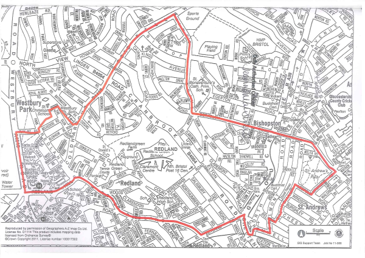
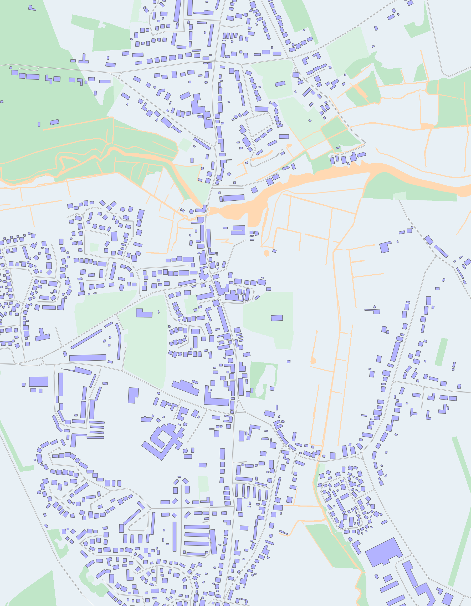
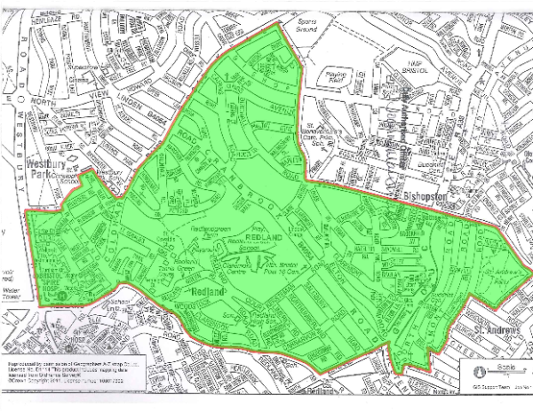
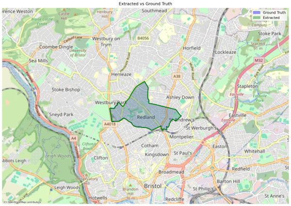
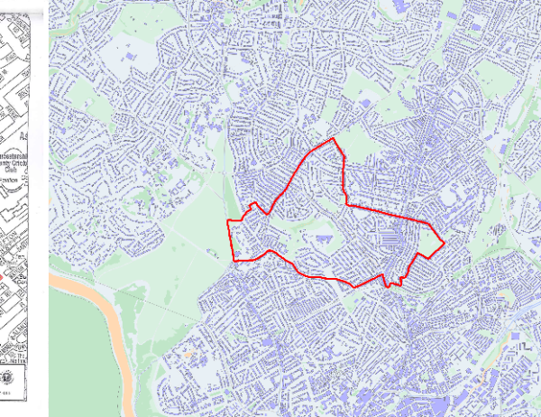
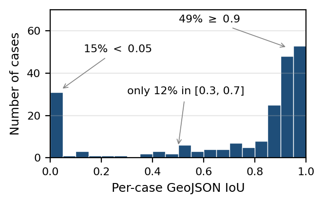
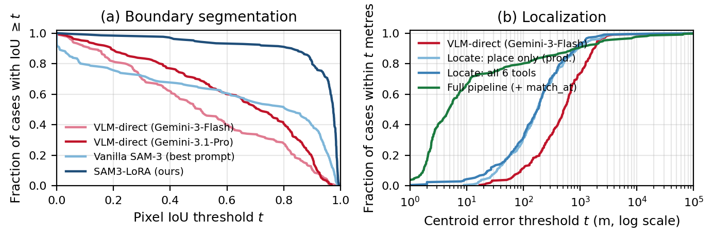
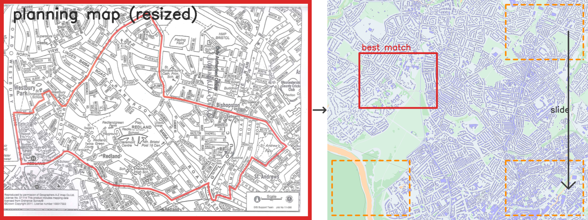
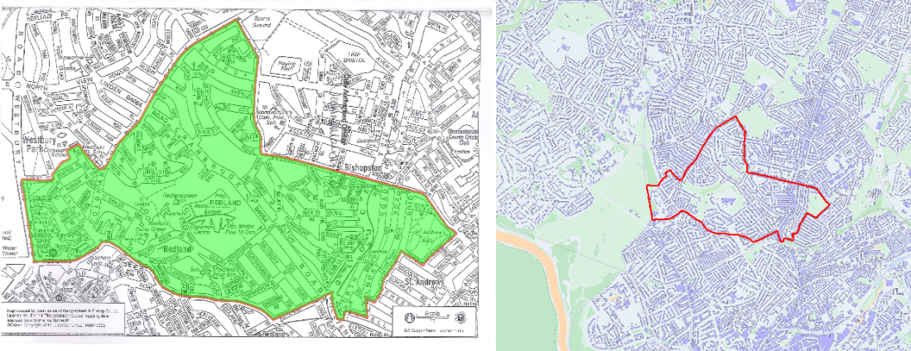

From a planning PDF
to a machine-readable boundary.
Plan2Map is a multimodal benchmark for document-grounded geospatial boundary reconstruction. GeoPlanAgent is our tool-augmented agent that reads a UK Article 4 planning document, grounds it in real geography with an offline gazetteer, registers the planning map against Ordnance Survey basemap tiles with MINIMA-LoFTR, segments the drawn boundary with a fine-tuned SAM 3, and projects the result to a WGS84 GeoJSON polygon.

{
site_address: "Market Pl, Loddon",
postcodes: ["NR14 6EZ"],
scale: 2500,
map_pages: [4],
area_group: 0,
...
}PDFInfoLocatePick (lat, lon, σ)


12:00116:ART4 (Loddon Market Place):
~95 s on an Apple M3 Max laptop, 0.94 IoU against the held-out
reference. Scroll for the interactive walk-through — the Worker stitches stages
3–6 together and may loop them per area_group on multi-area docs.
Planning records describe areas. They don’t hand you a polygon.
UK Article 4 Directions, conservation areas, and tree-preservation orders all define spatial restrictions. But the source document is rarely machine-readable: the boundary lives across legal notice text, schedules, scanned map plates, map labels, and hand-drawn annotations. To compare these records with other planning data, an authority must reconstruct the boundary by hand — a slow, error-prone process that doesn’t scale across local-authority archives.
We frame this as document-grounded geospatial boundary reconstruction: given only the source PDF, recover a valid WGS84 polygon. The reference geometry is held out for scoring; systems may use declared public resources such as gazetteers and basemaps. Unlike standard document-understanding tasks, the output is an externally verifiable spatial object.
Asked to read the PDF and emit GeoJSON in one pass, four frontier vision-language models (Gemini 3.1 Pro, GPT-5.5 Pro, Claude Opus 4.7, Gemini 3 Flash) all land in the same bottom band — 0.04–0.11 mean IoU, no case above 0.8, median centroid errors of 490 m–1.1 km.
6× — the boost GeoPlanAgent gets over the best VLM baseline on the same 40-case stratified subset.
A six-stage decomposition you can step through.
Click any stage to light up its inputs, tools, and outputs. The arrows pulse to show what flows where. We picked this decomposition because it lines up with the three places where current multimodal systems break: reading dense PDFs, grounding text to real geography, and pixel-accurate registration.
One VLM call. One typed record of spatial evidence.
The Reader is a single pydantic-ai
call on the raw PDF binary — no OCR pipeline; the VLM reads the PDF directly —
and returns a typed PDFInfo instance. It collects every spatial signal a
downstream geocoder might need:
- postcodes & OS grid references
- site address, house-number / road pairs
- named places, parishes, administrative region
- printed map scale
- per-page classification (
matchvsdiscard) witharea_groupand boundary-clarity tier - an
is_district_wideflag that short-circuits the whole pipeline throughlookup_district
The output schema is the contract for the rest of the pipeline. If the Reader sets
area_group = 1 on two map pages of the same site under different
Schedule 2 classes, the worker knows to commit them as one boundary. If it lifts
a postcode from the council letterhead by mistake, the Locate sub-agent will be told
to pick from a different signal type on retry.
// Reader output (abridged PDFInfo)
{
"site_address": "Land east of the Market Place,
Loddon, Norfolk",
"postcodes": ["NR14 6EZ"],
"grid_refs": ["TM 363 988"],
"scale": 1250,
"is_district_wide": false,
"district_name": null,
"map_pages": [3],
"map_page_details": [
{"page": 1, "category": "discard",
"caption": "Notice text + applicant signature"},
{"page": 2, "category": "discard",
"caption": "Location pin / town overview"},
{"page": 3, "category": "match", "area_group": 0,
"boundary_clarity": "clear",
"detail_level": "close",
"caption": "OS-style site map with red boundary"}
],
"likely_town_or_city": "Loddon",
"parish_names": ["Loddon"],
"admin_region": "South Norfolk",
"house_number_road_pairs": [],
"visible_map_labels": ["Market Place", "High Street",
"St Mary's Church"],
"adjacency_hints": ["Market Place"]
}
A separate LLM picks one point in the UK, with a confidence radius.
The Locate sub-agent is invoked through the Worker’s propose_centers
tool. It sees the PDFInfo and the rendered map image. In
production it ships with one geocoder — OS Open Names, a free
UK gazetteer of villages, schools, churches, and named buildings. Five more
geocoders (postcode, grid ref, road, road-intersection, LA-name) are wired up
for paper-ablation leave-one-outs.
The agent runs 2–4 queries combining signals from the Reader with labels it
can read directly off the map image. It clusters the candidates and emits
one LocatePick(lat, lon, sigma, confidence, source, evidence). Two or
more candidates agreeing within 500 m collapse to a tight σ ≈
200 m; a single ambiguous pick gets 800–1500 m.
When the Worker isn’t happy with the resulting MINIMA match, it can re-invoke
propose_centers(match_context="...") with feedback. The sub-agent reads
that feedback alongside its prior reasoning and is told to pick from a
different signal type next time — a road-based pick instead of a
postcode that probably points to the council office, for example.
LocatePickMINIMA-LoFTR slides the planning map across OS tiles — up to 100 windows per zoom, per rotation.
The Locate sub-agent gives us a rough anchor, often with σ ≈ 200 m. Planning
boundaries are parcel-sized, so we still need pixel-accurate registration. Press
Play to watch real MINIMA hunt for the right alignment —
every n_inliers below is the actual count from running MINIMA-LoFTR on case
12:00116:ART4 (Loddon, Norfolk) at z17, captured by re-running the matcher
offline. The hardcoded right answer is window (702, 819) with
810 inliers.

SAM 3 + LoRA. One adapter per fold. No case ever judged by a model that saw it.

Boundaries in planning PDFs are visually wild — solid red lines, dashed black, coloured hatch, sometimes a blob of yellow highlighter. Base SAM 3 with a search over five prompts hits 0.611 pixel IoU. With a 5-fold LoRA fine-tune on “planning boundary”, we reach 0.912 mean pixel IoU — +0.30.
Because the LoRA training pool overlaps with the benchmark, every evaluation case
is segmented by the adapter from the fold that didn’t see it.
tools/core/fold_routing.py resolves case → fold by hashed lookup,
falling back to the lowest available fold for cases the training pool didn’t
contain.
| Boundary segmentation | N | Mean pixel IoU | ≥0.8 |
|---|---|---|---|
| VLM-direct (Gemini 3 Flash) | 211 | 0.515 | 27.5% |
| VLM-direct (Gemini 3.1 Pro) | 211 | 0.630 | 40.8% |
| Vanilla SAM 3 (best prompt) | 211 | 0.611 | 51.2% |
| SAM 3 + LoRA (ours) | 211 | 0.912 | 91.0% |
Mask pixels → tile pixels → lat/lon. Cookie-cutter geometry, fully traceable.
RANSAC produced an affine H that maps planning-map pixels to OS tile
pixels. SAM 3 produced a binary mask in planning-map pixels. We trace the mask’s
external contour, transform each contour vertex through H, then use the
web-mercator inverse at the tile zoom level to convert each tile pixel to
(latitude, longitude). The output is a single GeoJSON Feature — a
Polygon for one contour, a MultiPolygon when SAM 3 emits
disjoint masks.
For multi-area planning documents, the Worker runs the whole loop once per
area_group and the per-group polygons are shapely-unioned
into the final result.
Documents that cover an entire administrative area — borough-wide Article 4
directions, conservation-area-wide planning — bypass visual positioning
entirely: lookup_district returns the OS BoundaryLine polygon directly,
the Worker submits status="district_lookup", no MINIMA, no SAM 3.
Bimodal by design. The hard cases are pinpointable.
The IoU distribution is sharply bimodal: 50.5% of cases at IoU ≥ 0.9 and 12.0% below 0.05, with only 12.5% sitting in the [0.3, 0.7] middle band. Most cases either succeed cleanly or fail in a way that’s diagnosable — usually a localisation miss or a SAM 3 boundary that landed on the wrong drawn line.


| Method | N | Valid (IoU>0) |
GeoJSON quality | Localisation | Cost | |||||
|---|---|---|---|---|---|---|---|---|---|---|
| Mean IoU | Median IoU | F1 | IoU ≥ 0.8 | Err (m) | Tight | $ / doc | Time (s) | |||
| VLM end-to-end | ||||||||||
| Gemini 3.1 Pro | 40 / 208 | 42.5% | 0.112 | 0.000 | 0.160 | 0.0% | 490 | 7.5% | 0.106 | 75 |
| Ours | ||||||||||
| GeoPlanAgent | 208 | 89.4% | 0.736 | 0.904 | 0.788 | 67.8% | 4.6 | 78.8% | 0.019 | 153 |
| + Critic | 208 | 89.9% | 0.740 | 0.906 | 0.792 | 67.8% | 4.6 | 78.8% | 0.021 | 155 |
| Variants | ||||||||||
| Collapsed Reader | 208 | 88.9% | 0.733 | 0.904 | 0.784 | 67.3% | 4.7 | 78.4% | 0.030 | 156 |
Stage-by-stage on one real case.
Worked example: a UK Article 4 Direction over Land east of the Market Place, Loddon, Norfolk. Same case threaded through every stage of GeoPlanAgent.
map_pages=[3], area_group=0, boundary_clarity=clear.


Cite, fork, and run it yourself.
GeoPlanAgent runs offline on a single Apple M3 Max laptop. The OS OpenData stack (Zoomstack, BoundaryLine, Open Names, OpenMap Local, Code-Point Open) is all OGL v3 with no API key. MINIMA-LoFTR weights and SAM 3 base weights are one-shot downloads.
@inproceedings{plan2map2026,
title = {Plan2Map: A Multimodal Benchmark for
Document-Grounded Geospatial
Boundary Reconstruction},
author = {Anonymous},
year = {2026},
booktitle = {Proceedings of ACL},
}